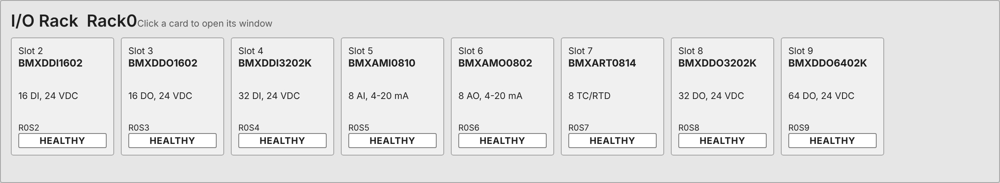

<figure class="card" id="Templates_IO_RackOverview"><div class="view" style="width:240px;height:44px"><div class="stage" style="width:1200px;height:220px;transform:scale(0.2000)"><div class="hit" style="position:absolute;inset:0;pointer-events:none" title="click: open dynamic window"></div></div></div><figcaption><code>Templates/IO/RackOverview</code><br><b class="ok">native:x80 device DDT</b> &middot; dynamic window <code>dw_IOCard</code><br>no click target: rack container; its SlotTiles open dw_IOCard<br><i>render of the real view</i></figcaption></figure>